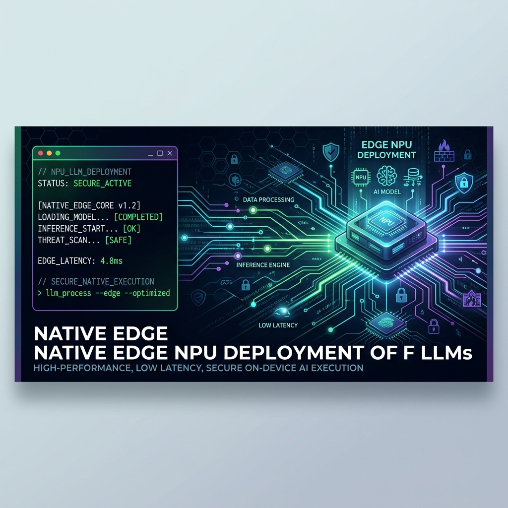

The NPU Journey Part 2: The True Guide to Deploying LLMs on the Axera AX8850

In Part 1, we came clean about our over-engineered journey to tame the Radxa AI Core AX-M1 (Axera AX8850). We fought bad software, broken paths, and buggy JSON parsers, mistaking them for hard silicon locks.
Now that the dust has settled, we want to provide the accurate, step-by-step guide to deploying a local LLM on the AX8850. No PyArmor intercepts. No custom orchestrator hacks. Just clean, native deployment.
The Environment
- Host: Proxmox VE Server
- Workload: Unprivileged LXC Container with PCIe Passthrough
- NPU: Radxa AI Core AX-M1 (AX8850)
Step 1: The Hardware Passthrough
First, ensure the PCIe NPU is visible on the Proxmox host (lspci | grep -i accel) and that the host kernel drivers (axcl_host, ax_pcie) are loaded.
To give your LXC container access, append these direct device mappings to your container config (/etc/pve/lxc/<ID>.conf):
lxc.cgroup2.devices.allow: c 10:* rwm
lxc.mount.entry: /dev/axcl_host dev/axcl_host none bind,optional,create=file 0 0
lxc.mount.entry: /dev/ax_mmb_dev dev/ax_mmb_dev none bind,optional,create=file 0 0
lxc.mount.entry: /dev/msg_userdev dev/msg_userdev none bind,optional,create=file 0 0
lxc.mount.entry: /dev/p2p dev/p2p none bind,optional,create=file 0 0
Step 2: Compiling the Native Server
Forget the vendor's bloated interactive CLI. We are going to build the clean axllm Zero-Copy server from source inside the LXC container.
# Install dependencies
sudo apt update && sudo apt install -y build-essential cmake git python3 python3-venv wget curl
# Clone the native server
mkdir -p /opt/axera/source && cd /opt/axera/source
git clone --recursive https://github.com/AXERA-TECH/ax-llm
cd ax-llm && mkdir build && cd build
# Build it
cmake .. -DAX_TARGET_ARCH=x86 -DAX_BUILD_API=ON
make -j$(nproc)
sudo cp axllm /usr/local/bin/axllm
Step 3: The AX650 Shortcut (The Big Secret)
Here is the secret that caused us so much grief: You don't need to compile models for the AX8850.
The AX8850 native memory allocator flawlessly executes .axmodel graph files compiled for the older AX650 architecture. You can entirely bypass the broken local compiler (pulsar2) by just downloading pre-compiled AX650 binaries from Hugging Face (e.g., Qwen3.5-2B-AX650-GPTQ-Int4 or gemma-4-E2B-it-GPTQ-INT4).
Place your downloaded model folder into /opt/axera/models/.
Step 4: Fixing the JSON Bugs
Before launching the server, you must fix the vendor software bugs on disk.
If you are running Gemma or any model with multiple End-Of-Sentence (EOS) tokens, the vendor parser will crash and output infinite garbage loops (factfactfact...). You must manually edit the model's config.json (both the root one and the tokenizer's) and enforce a single integer for the EOS token:
// Change this:
"eos_token_id": [1, 106]
// To this:
"eos_token_id": 106
(You can also use a quick Python script to strip it out entirely if needed).
Step 5: Launching the Inference Server
With the LXC container mapped and the model patched, you can spin up the OpenAI-compliant server directly.
Before starting, it is highly recommended to flush the driver to avoid memory address mapping collisions from previous runs:
# Flush NPU PCIe driver and release CMM memory
sudo rm -rf /tmp/axcl
sudo mkdir -p /tmp/axcl
sudo chmod 777 /tmp/axcl
Then, launch the server:
nohup axllm serve /opt/axera/models/Qwen3.5-2B-AX650-GPTQ-Int4-C128-P1152-CTX2047 \
--host 0.0.0.0 --port 8000 > /opt/axera/models/axllm_server.log 2>&1 &
The NPU will load the model directly into its Contiguous Memory (CMM) blocks, and your standard OpenAI API gateway will be alive on port 8000.
Conclusion
We now have a dedicated, hardware-accelerated LLM API running natively on an edge NPU. It streams tokens in under a second and requires very little power, making it the perfect sanity-check node for autonomous red team pipelines.
By stepping back and diagnosing the actual software bugs instead of immediately reverse engineering the entire stack, we achieved a much cleaner, native integration.
Sometimes, the system isn't fortified against you, it's just broken.
The NPU Journey Series
- Part 1: Taming the Axera AX8850 (And Why We Reverse-Engineered Everything for Nothing)
- Part 2: The True Guide to Deploying LLMs on the Axera AX8850
- Part 3: Night Shift Compilation Breakthroughs (AppArmor, LXC Ghost Memory)
- Part 4: Conquering the Final Boss (Strict JSONs, CMM Boot Windows, and Gateways)